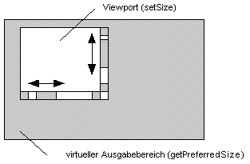
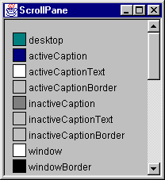

32.12 ScrollPane
Ein sehr nützliches Dialogelement ist ScrollPane,
ein Container
für automatisches horizontales und vertikales Scrolling. Ein
ScrollPane
ist von der Funktion her einem Panel
ähnlich und kann wie jedes andere Dialogelement innerhalb eines
Fensters verwendet werden. ScrollPane
unterscheidet sich allerdings durch zwei wichtige Eigenschaften von
einem gewöhnlichen Panel:
- Es kann genau ein Dialogelement aufnehmen und benötigt
keinen expliziten Layoutmanager.
- Es ist in der Lage, eine virtuelle Ausgabefläche
zu verwalten, die größer ist als die auf dem Bildschirm
zur Verfügung stehende.
Die innerhalb von ScrollPane
angezeigte Komponente arbeitet dabei immer mit der virtuellen Ausgabefläche
und merkt nichts von eventuellen Größenbeschränkungen
auf dem Bildschirm. Falls die benötigte Ausgabefläche größer
ist als die anzeigbare, blendet ScrollPane
automatisch die erforderlichen Schieberegler ein, um das Dialogelement
horizontal und vertikal verschieben zu können.
Zur Instanzierung eines ScrollPane
stehen zwei Konstruktoren zur Verfügung:
Der Parameter scrollbarDisplayPolicy
definiert die Strategie zur Anzeige der Schieberegler entsprechend
den in Tabelle 32.2
aufgelisteten Konstanten.
Tabelle 32.2: Konstanten zur Anzeige der Schieberegler in ScrollPane
Nach der Konstruktion des ScrollPane
wird die aus Container geerbte Methode add
aufgerufen, um eine Komponente hinzuzufügen. Im Gegensatz zu
anderen Containern sollte add
hier lediglich einmal aufgerufen werden, denn ScrollPane
kann nur ein einziges Element aufnehmen. Soll ein komplexer Dialog
mit vielen Elementen dargestellt werden, so müssen diese in ein
Panel
verpackt und dann gemeinsam an add
übergeben werden.
Nach dem Einfügen einer Komponente kann die Methode setSize
aufgerufen werden, um die sichtbare Größe des ScrollPane
festzulegen. Die sichtbare Größe ist die Größe,
in der das ScrollPane
dem Fenster erscheint, in das es eingebettet wurde. Der dadurch definierte
Ausschnitt aus dem virtuellen Ausgabebereich wird als Viewport
bezeichnet.
Die Größe des virtuellen Ausgabebereichs wird dagegen durch
das mit add
eingefügte Element selbst festgelegt. Es überlagert dazu
getPreferredSize
und gibt so die gewünschten Abmessungen an den Aufrufer zurück.
Die Methode getPreferredSize
spielt eine wichtige Rolle bei der automatischen Anordnung von Dialogelementen
mit Hilfe eines Layoutmanagers. Sie wird aufgerufen, wenn ein Container
wissen will, wie viel Platz eine Komponente innerhalb eines Bildschirmlayouts
belegt. Wir werden in Kapitel 33
noch einmal auf getPreferredSize
zurückkommen. Abbildung 32.11
fasst die bisherigen Ausführungen zusammen.

Abbildung 32.11: ViewPort und virtueller Ausgabebereich beim ScrollPane
Die Klasse ScrollPane
stellt einige Methoden zur Verfügung, mit denen die Darstellung
und Reaktion der Schieberegler beeinflusst werden kann:
Mit getHAdjustable
wird ein Objekt beschafft, das den Zugriff auf den horizontalen Schieberegler
ermöglicht, und mit getVAdjustable
eines für den vertikalen Schieberegler. Das Interface Adjustable
wurde bereits beim Scrollbar
vorgestellt, es abstrahiert den Zugriff auf einen Schieberegler. Da
die meisten Eigenschaften der Schieberegler bereits von ScrollPane
voreingestellt werden, sollte sich das eigene Programm darauf beschränken,
durch Aufruf von setUnitIncrement
die Schrittweite der Schieberegler einzustellen.
Des Weiteren gibt es einige Methoden für den Zugriff auf den
Viewport und seine Position innerhalb des virtuellen Ausgabebereichs:
public Dimension getViewportSize()
public void setScrollPosition(int x, int y)
public Point getScrollPosition()
|
java.awt.ScrollPane |
getViewportSize
liefert die aktuelle Größe des Viewports. Mit getScrollPosition
kann die Position desjenigen Punkts der virtuellen Ausgabefläche
ermittelt werden, der gerade in der linken oberen Ecke des Viewports
angezeigt wird. Mit setScrollPosition
kann der Viewport vom Programm verschoben werden. Die übergebenen
Werte müssen dabei zwischen 0,0 und der jeweils maximalen Größe
des virtuellen Ausgabebereichs minus der Größe des Viewports
liegen.
Wir wollen ein einfaches Beispiel konstruieren, das die Anwendung
von ScrollPane
demonstriert. Dazu soll ein Programm geschrieben werden, das eine
Liste aller Systemfarben mit ihrer Bezeichnung und einer Farbprobe
auf dem Bildschirm ausgibt. Da es insgesamt 26 verschiedene Systemfarben
gibt, soll das Programm jeweils nur einen kleinen Ausschnitt darstellen,
der vom Anwender verschoben werden kann.
Zur Erstellung des Programms gehen wir in drei Schritten vor:
- Wir definieren zunächst eine Hilfsklasse NamedSystemColors,
die alle verfügbaren Systemfarben sortiert und einen einfachen
Zugriff auf ihre Namen und das zugehörige Farbobjekt erlaubt.
- Anschließend definieren wir eine Klasse SystemColorViewer,
die aus Canvas
abgeleitet wird und dazu dient, die Systemfarben nacheinander auf
dem Bildschirm auszugeben. Wir überlagern die Methode getPreferredSize,
um die zur Ausgabe aller Farben erforderliche Größe der
Komponente bekanntzumachen. Außerdem überlagern wir paint,
um die eigentliche Ausgabe zu realisieren. Dabei reserviert getPreferredSize
ausreichend Platz, um jede Farbe in einer eigenen Ausgabezeile darstellen
zu können. Innerhalb von paint
wird lediglich jedes einzelne Farbobjekt aus NamedSystemColors
beschafft und dazu die Farbbox und der zugehörige Text ausgegeben.
In Kapitel 33 werden
wir noch einmal genauer auf die Verwendung von Canvas
zur Erzeugung eigener Komponenten zurückkommen.
- Nach diesen Vorarbeiten ist die Verwendung von ScrollPane
ganz einfach. Wir legen dazu einen Frame
an, der das Hauptfenster unserer Applikation wird, und instanzieren
das ScrollPane-Objekt.
Mit add
wird eine Instanz von SystemColorViewer
übergeben, anschließend die Schrittweite der Schieberegler
angepasst und schließlich mit setSize
die Größe des sichtbaren Ausschnitts festgelegt. Nachdem
ScrollPane
an den Frame
übergeben wurde, ist das Programm einsatzbereit.
Der nachfolgende Quellcode enthält alle drei Klassen und zeigt,
wie sie zusammenarbeiten:
001 /* Listing3216.java */
002
003 import java.awt.*;
004 import java.awt.event.*;
005
006 class NamedSystemColors
007 {
008 String[] names;
009 SystemColor[] colors;
010
011 public NamedSystemColors()
012 {
013 names = new String[SystemColor.NUM_COLORS];
014 colors = new SystemColor[SystemColor.NUM_COLORS];
015 names [ 0] = "desktop";
016 colors[ 0] = SystemColor.desktop;
017 names [ 1]= "activeCaption";
018 colors[ 1] = SystemColor.activeCaption;
019 names [ 2] = "activeCaptionText";
020 colors[ 2] = SystemColor.activeCaptionText;
021 names [ 3] = "activeCaptionBorder";
022 colors[ 3] = SystemColor.activeCaptionBorder;
023 names [ 4] = "inactiveCaption";
024 colors[ 4] = SystemColor.inactiveCaption;
025 names [ 5] = "inactiveCaptionText";
026 colors[ 5] = SystemColor.inactiveCaptionText;
027 names [ 6] = "inactiveCaptionBorder";
028 colors[ 6] = SystemColor.inactiveCaptionBorder;
029 names [ 7] = "window";
030 colors[ 7] = SystemColor.window;
031 names [ 8] = "windowBorder";
032 colors[ 8] = SystemColor.windowBorder;
033 names [ 9] = "windowText";
034 colors[ 9] = SystemColor.windowText;
035 names [10] = "menu";
036 colors[10] = SystemColor.menu;
037 names [11] = "menuText";
038 colors[11] = SystemColor.menuText;
039 names [12] = "text";
040 colors[12] = SystemColor.text;
041 names [13] = "textText";
042 colors[13] = SystemColor.textText;
043 names [14] = "textHighlight";
044 colors[14] = SystemColor.textHighlight;
045 names [15] = "textHighlightText";
046 colors[15] = SystemColor.textHighlightText;
047 names [16] = "textInactiveText";
048 colors[16] = SystemColor.textInactiveText;
049 names [17] = "control";
050 colors[17] = SystemColor.control;
051 names [18] = "controlText";
052 colors[18] = SystemColor.controlText;
053 names [19] = "controlHighlight";
054 colors[19] = SystemColor.controlHighlight;
055 names [20] = "controlLtHighlight";
056 colors[20] = SystemColor.controlLtHighlight;
057 names [21] = "controlShadow";
058 colors[21] = SystemColor.controlShadow;
059 names [22] = "controlDkShadow";
060 colors[22] = SystemColor.controlDkShadow;
061 names [23] = "scrollbar";
062 colors[23] = SystemColor.scrollbar;
063 names [24] = "info";
064 colors[24] = SystemColor.info;
065 names [25] = "infoText";
066 colors[25] = SystemColor.infoText;
067 }
068
069 public int getSize()
070 {
071 return SystemColor.NUM_COLORS;
072 }
073
074 public String getName(int i)
075 {
076 return names[i];
077 }
078
079 public SystemColor getColor(int i)
080 {
081 return colors[i];
082 }
083 }
084
085 class SystemColorViewer
086 extends Canvas
087 {
088 NamedSystemColors colors;
089
090 public SystemColorViewer()
091 {
092 colors = new NamedSystemColors();
093 }
094
095 public Dimension getPreferredSize()
096 {
097 return new Dimension(150,16 + colors.getSize() * 20);
098 }
099
100 public void paint(Graphics g)
101 {
102 for (int i = 0; i < colors.getSize(); ++i) {
103 //Rahmen für Farbbox
104 g.setColor(Color.black);
105 g.drawRect(10,16+20*i,16,16);
106 //Farbbox
107 g.setColor(colors.getColor(i));
108 g.fillRect(11,17+20*i,15,15);
109 //Bezeichnung
110 g.setColor(Color.black);
111 g.drawString(colors.getName(i),30,30+20*i);
112 }
113 }
114 }
115
116 public class Listing3216
117 extends Frame
118 {
119 public static void main(String[] args)
120 {
121 Listing3216 wnd = new Listing3216();
122 wnd.setLocation(200,100);
123 wnd.setVisible(true);
124 }
125
126 public Listing3216()
127 {
128 super("ScrollPane");
129 setBackground(Color.lightGray);
130 //ScrollPane
131 ScrollPane sc = new ScrollPane(
132 ScrollPane.SCROLLBARS_AS_NEEDED
133 );
134 sc.add(new SystemColorViewer());
135 sc.getVAdjustable().setUnitIncrement(1);
136 sc.getHAdjustable().setUnitIncrement(1);
137 sc.setSize(200,200);
138 add(sc);
139 //Window-Listener
140 addWindowListener(new WindowClosingAdapter(true));
141 //Dialogelement anordnen
142 pack();
143 }
144 }
|
Listing3216.java |
Listing 32.16: Verwendung der Klasse ScrollPane
Ein Probelauf des Programms ergibt folgende Ausgabe:

Abbildung 32.12: Verwendung von ScrollPane